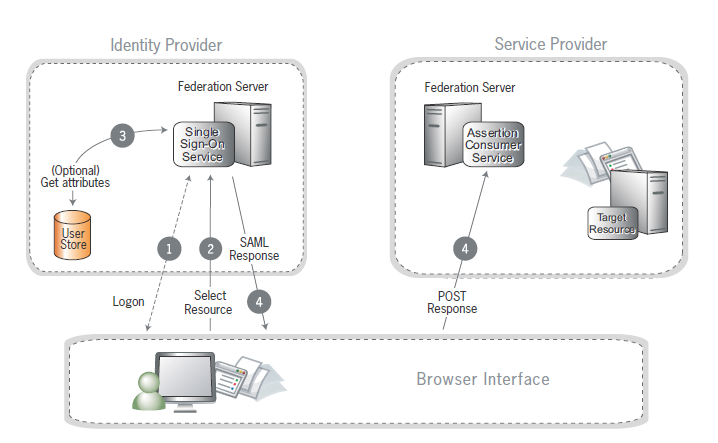

Single Sign-On (SSO) is a service that allows users to have one set of login credentials to access multiple web applications without the need to re-enter login credentials at each application.
Cority uses the Security Assertion Markup Language (SAML) 2.0 protocol to enable applications to provide single sign-on for their users. The protocol allows identity providers (IdP) to pass authorization credentials to service providers (SP). All communications between components are secured. Using SAML, your Active Directory or other internal security authority can serve as the identity provider when employees want to login to EMS. Once setup, the SAML SSO integration allows your employees to use Cority EMS applications without any authentication steps other than what they do every day to authenticate to their corporate network.
Currently, EMS supports SSO for the following applications:
This document covers the following topics:
The following identity providers are supported:
Before you start configuration, ensure that you have the following:
Use the following steps as a general deployment guidelines for SSO:
| Step | Responsible Party | Action |
| 1 |
Cority |
Provide metadata configuration file and IP addresses
|
| 2 | Customer
|
Provide metadata, certificates, IP addresses, urls, and a test username/password
|
| 3 | Customer
|
Configure Identity Provider |
| 4 | Cority |
Configure EMS system
|
| 5 | Customer
|
Verify all users have EMS profiles
|
| 6 | Customer
|
Test prior to rollout |
The following diagram illustrates how EMS authenticates users via Customer's Identity Provider.
Identity federation standards identify two operational roles in an Internet SSO transaction:

The following table lists parameters that are used in deploying SSO.
| Parameter | Support | Comments |
| Assertion Lifetime | 5 minutes before or after | |
| SSO Request initiation | Service Provider (SP) or Identity Provider (IdP) Initiated | SP Initiated Preferred |
| SAML_Subject | urn:oasis:names:tc:SAML:2.0:nameid-format:transient | Required |
| Attributes | Agreed upon value | Typically user’s Employee ID or other unique value, sent as uid or other agreed upon value |
| AuthContext | Agreed upon value | Unspecified, unless otherwise requested. |
| On Logout | Redirect to logout URL | |
| Logout URL | Configurable per Customer’s requirement | |
| On Timeout | Closed user session | |
| On Timeout URL | Same as Logout URL |
|
|
Digital Signing Certificate |
Available with Metadata Exchange | |
| Encryption | Support for entire assertion encrypted | AES 256 Preferred |
The user may log into the EMS system using any of the following methods, if methods are allowed and supported by Customer network security policies:
| Problem | Suggested solution |
| An error message "User does not exist in the system" is displayed when trying to log in using SSO. | Ensure that the user is added to the EMS system. |